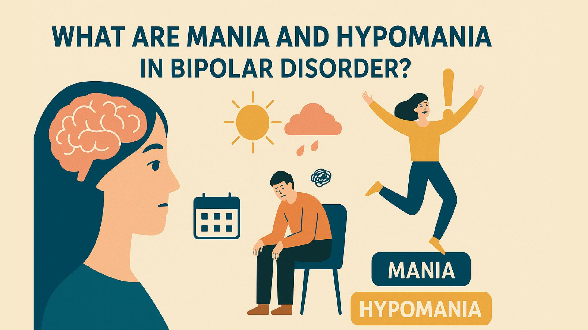

Bipolar Disorder

Bipolar Disorder is characterized my intense mood swings. This includes emotional highs (referred to as mania or hypomania) and emotional lows (depression). This affects a persons ability to control their mood, energy, and level of functioning. Bipolar I is when someone experiences manic, hypomanic, and depressive episodes, while Bipolar II does not include manic episodes but does include hypomanic and depressive ones.
Symptoms of Mania and Hypomania (mania being more severe):
- excessive levels of energy or activity
- being talkative and speaking quickly
- racing thoughts
- being jumpy
- becoming easy to distract
- increased agitation or irritability
- overconfidence
- increased engagement in risky behavior or acting impulsively
- sleeping less and being restless
- euphoria, excitement, or happiness
Symptoms of Depression:
- feeling sad, empty, hopeless, tearful, or irritable
- having a loss of interest in all or most activities
- losing or gaining weight
- trouble sleeping, too little or too much
- low levels of energy and being tired
- feeling restless
- feeling worthless or guilty unecessarily
- lowered self-esteem
- having difficulties with concentrating, memory, and making decisions
- sucidal thoughts or behaviors